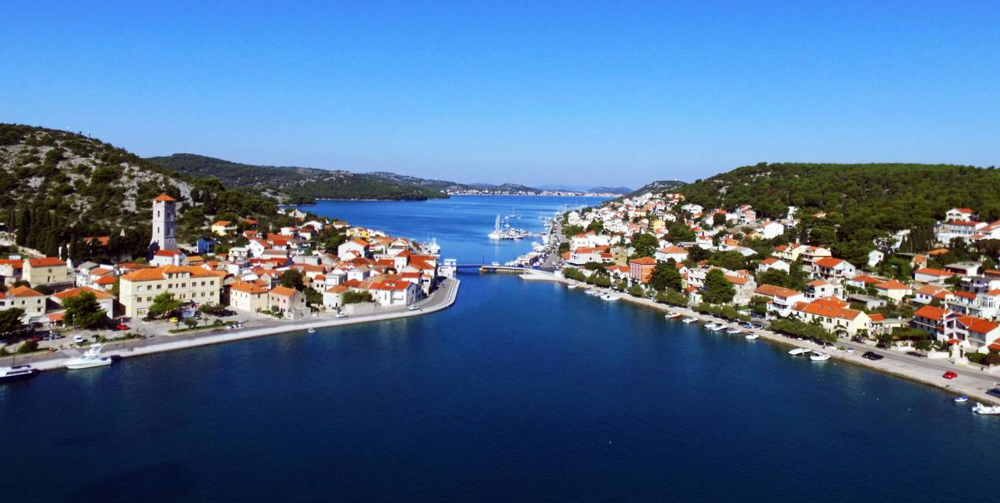

The town of Tisno is the first place in the island of Murter you will encounter if you choose to visit this Middle Adriatic island. Although it is the youngest settlement on the island, Tisno is deserving of the fact that Murter has a great advantage over the other Adriatic islands, which is a bridge with a bridge stretching over 38 meters wide, so you do not need to travel to Murter ferry or other boat transport. The town of Tisno is situated halfway between the peninsula and half on the island of Murter, and it is situated on the shore between the mainland and the island where the present of the Tisnošans are situated.
For the first time, Tisno was mentioned in 1474 when, during the Turkish invasion and in the war against the Venetians, many settlers inhabited this area by withdrawing themselves to the enemy. The oldest Croatian name Tishno is on the draft of 1567, and is now preserved in the Museum of the City of Sibenik. Throughout history this place has changed its name several times (Strait, Tissue) to finally get its name Tisno after the independence of the Republic of Croatia.
The bridge in Tisno began to be built after the fall of the Venetian Republic, but to this day, the moving bridge has undergone several reconstructions. Finally, he has his present role and form in 1991, when he was released in August. Tisno was a municipal center from 1808 until 1962 when the municipality was abolished, and the jurisdiction was taken over by the municipality of Šibenik. With the emergence of independent state of Croatia, the municipality of Tisno was re-established, and the Pirovac and Murter settlements were part of the local self-government unit, which were separated in 1997 and 2000 in an independent municipality.
Once Tisno, besides the administrative center, was also a cradle of trades and trades that was specially developed between the two world wars. In addition to trades and trades, the population also engaged in traditional activities - with vines and olives. Of all the settlements in this area, Tisno was first engaged in organized tourist offerings, so in the period between the two world wars, foreign tourists came to Tisno. Already at that time Tisno had hotels and pensions.
Today, Tisno is a peculiar Dalmatian settlement built by stone houses and chalks, spacious squares and lush Mediterranean vegetation. Tisno also boasts a long waterfront enriched with catering facilities such as cafes, taverns and restaurants. Crafts and trade are greatly reduced, and although the local population continues to engage in agriculture, tourism is the main activity of the inhabitants of Tisno. The result is an excellent position, a pleasant Mediterranean climate, a crystal clear sea, pebbly and sandy beaches and close proximity to the National Parks of Kornati and Krka, as well as larger towns on the coast - Sibenik (28km), Zadar (56km) and Split (100km) and good connections the main highway and the highway.
From the historical and cultural sights in the town is the Town Tower, built in the 15th century. There is also the parish church of St. The spirit of 1548, later adorned in Baroque style. The place where the legend says that Our Lady appeared, is the sanctuary of Our Lady of Karava. In the main part of the settlement Tisno there is also the church of Sv. Martin.